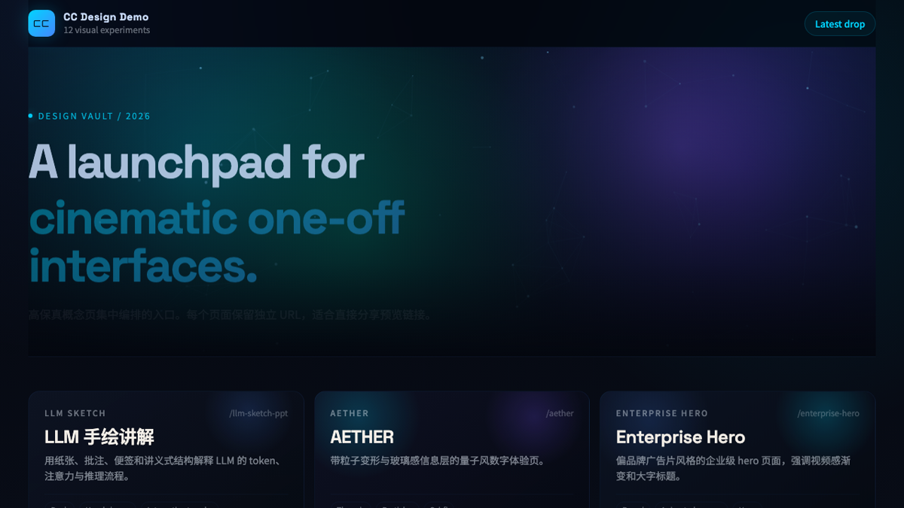
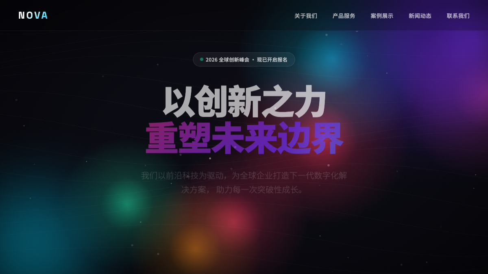
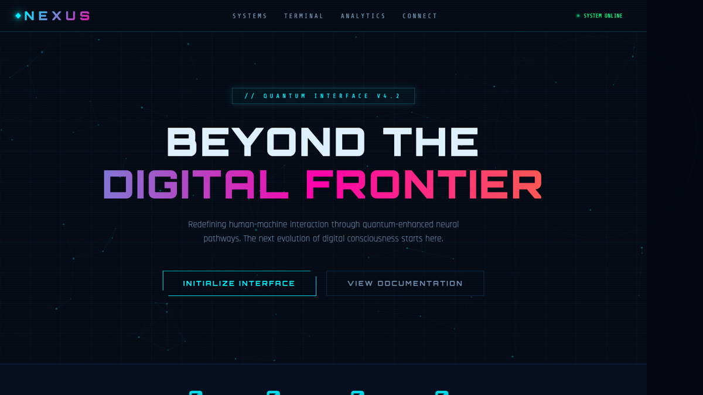

Outputs
从网页到原型，再到动画与幻灯片
项目覆盖 landing page、interactive prototype、slide deck、mobile mockup、animation、 design system exploration 等典型设计交付面。
这个页面不重写项目，而是把当前仓库里已经存在的 skill 定义、路由策略、工作流、参考文档、 模板组件、导出脚本、测试提示词和截图预览，按“先理解，再落地”的顺序重新组织起来。



当前仓库的价值，不只是一个 `SKILL.md` 文件，而是一整套设计工作流。下面这组模块把它拆成可浏览的能力面： 你可以先看定位，再进到具体 reference、template、script 和 prompt。
项目覆盖 landing page、interactive prototype、slide deck、mobile mockup、animation、 design system exploration 等典型设计交付面。
它首先强调事实核验、批量澄清问题和 anti-AI slop，然后才进入设计与实现，这让输出更稳定，也更能解释为什么这样做。
`templates/` 提供骨架，`scripts/` 负责导出，`verification` 文档负责验收，说明书站里也保留了这些路径入口。
`cc-design` 最重要的不是生成速度，而是生成前后的约束条件。项目把这三条原则写进了 skill 顶层，所以整个网站也把它们放到最前面。
对品牌、产品、价格、规格、发布状态等任何可核验事实，先查再说。它明确禁止“凭印象”输出看起来合理但可能错误的内容。
对新设计任务，优先一次性把上下文、变体、保真度、可调参数和任务特定问题问全；不是边做边猜，而是先把输入质量补齐。
项目把一整套常见“AI 味设计”列成禁区，从配色、字体、布局到假数据和装饰元素都有明确黑名单。
这是 `cc-design` 的核心操作系统。用户说“做一个 landing page”和说“做一个 iOS mockup”，加载的资料和模板完全不同。下面按类别重新排成可筛选的索引。
`cc-design` 把一轮设计任务拆成几个固定节点。说明书站保留这种时序结构，便于你从“用户怎么提需求”一路看到“页面怎么验收”。
先写 assumptions comment，把受众、语气、主流程、颜色方向和未决问题放到台面上。
对新任务先批量提问；对已有 rich brief 或快速迭代，可跳过到 assumptions。
根据任务类型决定读哪些 reference、复制哪些 template、重点验证什么。
上下文优先级从设计系统、代码库、官网、素材，再到 fallback system，一层层收束。
在编码前明确 focal point、情绪语调、视觉流、颜色与排版层级，避免边写边漂移。
写 HTML / JSX 只是中段动作；最后还要经过结构、视觉与设计卓越度三层验证。
`references/` 目录本质上是 skill 的知识底盘。这里按主题把常用文档重新聚类，你可以从任何一个卡片点进去继续读原文。
左侧是模板骨架，右侧是导出与转换脚本。说明书站保留了它们的使用时机，方便你判断什么时候应该复制模板，什么时候应该直接走脚本链。
直接复制进任务目录的 UI / frame / animation 骨架。
用于导出 PDF / PPTX / 视频、单文件内联和格式转换。
git clone https://github.com/ZeroZ-lab/claritas-design.git ~/.codex/skills/cc-design
cd ~/.codex/skills/cc-design/scripts && npm install
npx playwright install chromium
npx skills update cc-design`test-prompts.json` 给出 6 条测试样本，`EXAMPLES.md` 则补充了品牌克隆和传统用法。这里把两部分做成可快速浏览的 prompt 板。
这些图不是装饰，是项目已经落过地的视觉样例。页面里保留了预览和文件名，方便回溯对应素材。